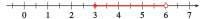
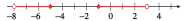
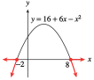

Section 4.4 Quadratic Inequalities
Subsection Solving Inequalities Graphically
The easiest way to solve a quadratic inequality is with a graph.
Example 4.45.
The Chamber of Commerce in River City plans to put on a Fourth of July fireworks display. City regulations require that fireworks at public gatherings explode higher than \(800\) feet above the ground. The mayor particularly wants to include the Freedom Starburst model, which is launched from the ground. Its height after t seconds is given by
When should the Starburst explode in order to satisfy the safety regulation?
We can get an approximate answer to this question by looking at the graph of the rocket's height, shown below.
We would like to know when the rocket's height is greater than 800 feet, or, in mathematical terms, for what values of \(t\) is \(h \gt 800\text{?}\) The answer to this question is the solution of the inequality
Points on the graph with \(h \gt 800\) are shown in color, and the \(t\)-coordinates of those points are marked on the horizontal axis. If the Freedom Starburst explodes at any of these times, it will satisfy the safety regulation.
From the graph, the safe time interval runs from approximately \(4.25\) seconds to \(11.75\) seconds after launch. The solution of the inequality is the set of all \(t\)-values greater than \(4.25\) but less than \(11.75\text{.}\)
Note 4.46.
The solution set in Example 4.45 is called a compound inequality, because it involves more than one inequality symbol. We write this inequality as
and read "\(t\) greater than \(4.25\) but less than \(11.75\text{.}\)"
Notebook 4.47. QuickCheck 1.
Technology 4.48. Solving an Inequality With a Graphing Calculator.
You can use your graphing calculator to solve the problem in Example 4.45. Graph the two functions
on the same screen. Use WINDOW settings to match the graph in Example 4.45.
Then use the intersect feature to find the points where the two graphs intersect, at about \(x=4.26\) and \(x=11.74\text{.}\) Both these points \(y\)-coordinate \(800\text{,}\) and between the points the parabola is above the line, so \(h \gt 800\) when \(4.26 \lt t \lt 11.74\text{.}\)
Notebook 4.49. Practice 1.
Subsection Using the \(x\)-Intercepts
Because it is easy to decide whether the \(y\)-coordinate of a point on a graph is positive or negative (the point lies above the \(x\)-axis or below the \(x\)-axis), we often rewrite a given inequality so that one side is zero.
Example 4.50.
Use a graph to solve \(x^2 - 2x - 3 \ge 12\)
We first write the inequality with zero on one side:
We would like to find points on the graph of \(~y = x^2 - 2x - 15\) that have \(y\)-coordinates greater than or equal to zero. A graph of the equation is shown below.
You can check that the \(x\)-intercepts of the graph are \(-3\) and \(5\text{.}\) The points shown in blue on the graph lie above the \(x\)-axis and have \(y \ge 0\text{,}\) so the \(x\)-coordinates of these points are the solutions of the inequality.
Note that the solutions lie in two intervals, less than \(-3\) or greater than \(5\text{.}\) Thus, the solution is \(x \le -3\) or \(x \ge 5\text{.}\)
Caution 4.51.
In Example 4.50 above, the solution of the inequality \(~x^2 - 2x - 15 \ge 0~\) is the set of values
This set is another type of compound inequality, and its graph consists of two pieces. Therefore, we cannot write the solution as a single inequality. For instance, it would be incorrect to describe the solution set as \(~-3 \ge x \ge 5~\text{,}\) because this notation implies that \(-3 \ge 5\text{.}\) We must write the solution as two parts: \(x \le -3\) or \(x \ge 5\text{.}\)
Notebook 4.52. QuickCheck 2.
Notebook 4.53. Practice 2.
Subsection Interval Notation
The solution set in Example 4.45, namely \(4.26 \lt t \lt 11.74\text{,}\) is called an interval. An interval is a set that consists of all the real numbers between two numbers \(a\) and \(b\text{.}\) An interval may include one or both of its endpoints.
Interval Notation.
- The closed interval \([a,b]\) is the set \(a \le x \le b\text{.}\)
- The open interval \((a,b)\) is the set \(a \lt x \lt b\text{.}\)
- Intervals may also be half-open or half-closed.
- The infinite interval \([a,\infty)\) is the set \(x \ge a\text{.}\)
- The infinite interval \((-\infty,a]\) is the set \(x \le a\text{.}\)
The symbol \(\infty\text{,}\) infinity, does not represent a specific real number; it indicates that the interval continues forever along the real line. A set consisting of two or more intervals is called the union of the intervals. For example, the solution to Example 4.50 is denoted in interval notation by \((-\infty,-3)\cup (5, \infty)\text{.}\)
Many solutions of inequalities are intervals or unions of intervals.
Example 4.54.
Write the solution sets with interval notation, and graph the solution set on a number line.
- \(\displaystyle 3 \le x \lt 6\)
- \(\displaystyle x \ge -9\)
- \(x \le 1\) or \(x \gt 4\)
- \(-8 \lt x \le -5\) or \(-1 \le x \lt 3\)
-
\([3,6)\text{.}\) This is called a half-open or half-closed interval.
 -
\([-9, \infty)\text{.}\) We always use round brackets next to the symbol \(\infty\) because \(\infty\) is not a specific number and is not included in the set.
-
\((-\infty,1] \cup (4, \infty)\text{.}\) The word "or" describes the union of two sets.
-
\((-8,-5] \cup [-1,3)\text{.}\)

Notebook 4.55. Practice 3.
Notebook 4.56. QuickCheck 3.
Subsection Solving Quadratic Inequalities Algebraically
Although a graph is very helpful in solving inequalities, it is not completely necessary. Every quadratic inequality can be put into one of the forms
All we really need to know is whether the corresponding parabola \(y = ax^2 + bx + c\) opens upward or downward. Consider the parabolas shown below.
The parabola in figure (a) opens upward. It crosses the \(x\)-axis at two points, \(x = r_1\) and \(x = r_2\text{.}\) At these points, \(y = 0\text{.}\)
The graph lies below the \(x\)-axis between \(r_1\) and \(r_2\text{,}\) so the solutions to the inequality \(y\lt 0\) lie between \(r_1\) and \(r_2\text{.}\)
The graph lies above the \(x\)-axis for \(x\)-values less than \(r_1\) or greater than \(r_2\text{,}\) so the solutions to the inequality \(y\gt 0\) are \(x\lt r_1\) or \(x\gt r_2\text{.}\)
If the parabola opens downward, as in figure (b), the situation is reversed. The solutions to the inequality \(y\gt 0\) lie between the \(x\)-intercepts, and the solutions to \(y\lt 0\) lie outside the \(x\)-intercepts.
From the graphs, we see that the \(x\)-intercepts are the boundary points between the portions of the graph with positive \(y\)-coordinates and the portions with negative \(y\)-coordinates. To solve a quadratic inequality, we need only locate the \(x\)-intercepts of the corresponding graph and then decide which intervals of the \(x\)-axis produce the correct sign for \(y\text{.}\)
To solve a quadratic inequality algebraically.
- Write the inequality in standard form: One side is zero, and the other has the form \(ax^2+bx+c\text{.}\)
- Find the \(x\)-intercepts of the graph of \(~y=ax^2+bx+c\) by setting \(y=0\) and solving for \(x\text{.}\)
- Make a rough sketch of the graph, using the sign of \(a\) to determine whether the parabola opens upward or downward.
- Decide which intervals on the \(x\)-axis give the correct sign for \(y\text{.}\)
Example 4.57.
Solve the inequality \(36 + 6x - x^2\le 20\) algebraically.
-
We subtract \(20\) from both sides of the inequality so that we have \(0\) on the right side.
\begin{equation*} 16 + 6x - x^2\le 0 \end{equation*} -
Consider the equation \(y = 16 + 6x - x^2\text{.}\) To locate the \(x\)-intercepts, we set \(y = 0\) and solve for \(x\text{.}\)
\begin{align*} 16 + 6x - x^2 \amp= 0 \amp\amp \blert{\text{Multiply each term by }-1.}\\ x^2 - 6x - 16 \amp = 0 \amp\amp \blert{\text{Factor the left side.}}\\ (x - 8)(x + 2)\amp= 0\amp\amp \blert{\text{Apply the zero-factor principle.}}\\ x - 8 = 0 ~~~\text{ or }~~~x + 2 \amp= 0\\ x = 8 ~~~\text{ or }~~~ x \amp= -2 \end{align*}The \(x\)-intercepts are \(x = -2\) and \(x = 8\text{.}\)
-
Make a rough sketch of the graph of \(y = 16 + 6x - x^2\text{,}\) as shown below. Because \(a = -1 \lt 0\text{,}\) the graph is a parabola that opens downward.
 We are interested in points on the graph for which \(y\le 0\text{.}\) The points with negative \(y\)-coordinates (that is, points below the \(x\)-axis) lie outside the \(x\)-intercepts of the graph, so the solution of the inequality is \(x\le -2\) or \(x\ge 8\text{.}\) Or, using interval notation, the solution is \((-\infty,-2] \cup [8,\infty)\text{.}\)
Caution 4.58.
Many people think that the inequality signs in the solution should point in the same direction as the sign in the original problem, and hence would incorrectly write the solution to Example 4.57 as \(x \le -2\) or \(x \le 8\text{.}\) However, you can see from the graph that this is incorrect. Remember that the graph of a quadratic equation is a parabola, not a straight line!
Notebook 4.59. Practice 4.
Notebook 4.60. QuickCheck 4.
Subsection Applications
If we cannot find the \(x\)-intercepts of the graph by factoring or extraction of roots, we can use the quadratic formula.
Example 4.61.
TrailGear, Inc. manufactures camping equipment. The company finds that the profit from producing and selling \(x\) alpine parkas per month is given, in dollars, by
How many parkas should the company produce and sell each month if it must keep the profits above $\(2000\text{?}\)
-
We would like to solve the inequality
\begin{equation*} -0.8x^2 + 320x - 25,200\gt 2000 \end{equation*}or, subtracting \(2000\) from both sides,
\begin{equation*} -0.8x^2 + 320x - 27,200 \gt 0 \end{equation*} -
Consider the function
\begin{equation*} y = -0.8x^2 + 320x - 27,200 \end{equation*}We locate the \(x\)-intercepts of the graph by setting \(y = 0\) and solving for \(x\text{.}\) We will use the quadratic formula to solve the equation
\begin{equation*} -0.8x^2 + 320x - 27,200 = 0 \end{equation*}so \(a = \alert{-0.8}\text{,}\) \(b = \alert{320}\text{,}\) and \(c = \alert{-27,200}\text{.}\) We substitute these values into the quadratic formula to obtain
\begin{align*} x \amp=\frac{-(\alert{320})\pm\sqrt{(\alert{320})^2 - 4(-0.8)(\alert{-27,200})}} {2(\alert{-0.8})}\\ \amp=\frac{-320\pm\sqrt{102,400 - 87,040}}{-1.6}\\ \amp=\frac{-320\pm\sqrt{15,360}}{-1.6} \end{align*}To two decimal places, the solutions to the equation are \(122.54\) and \(277.46\text{.}\)
-
The graph of the function is a parabola that opens downward, because the coefficient of \(x^2\) is negative.
-
The graph lies above the \(x\)-axis, and hence \(y \gt 0\text{,}\) for \(x\)-values between the two \(x\)-intercepts, that is, for \(122.54 \lt x \lt 277.46\text{.}\) Because we cannot produce a fraction of a parka, we restrict the interval to the closest whole number \(x\)-values included, namely \(123\) and \(277\text{.}\)
Thus, TrailGear can produce as few as \(123\) parkas or as many as \(277\) parkas per month to keep its profit above $\(2000\text{.}\)
Notebook 4.62. Practice 5.
Notebook 4.63. QuickCheck 4.
Exercises Problem Set 4.4
Warm Up
For Problems 1–4,
- Find the \(x\)-intercepts of the parabola.
- Decide whether the parabola opens up or down.
1.
\(y=x^2-2x-24\)2.
\(y=40-x^2\)3.
\(y=12-(x-3)^2\)4.
\(y=x^2+3x+1\)For Problems 5 and 6, write the set with interval notation, and graph the set on a number line.
5.
- \(\displaystyle 0 \le x \lt 4\)
- \(\displaystyle 8 \gt x \gt 5\)
6.
- \(\displaystyle x \le 1\)
- \(x \ge 3\) or \(x \le -3\)
Skills Practice
7.
-
Graph the equation \(~y=x^2-2x-3~\) on the grid.
- Darken the portion of the \(x\)-axis for which \(y \gt 0\text{.}\)
- Solve the inequality \(~x^2-2x-3\gt 0\)
8.
-
Graph the equation \(~y=x^2+2x-8~\) on the grid.
- Darken the portion of the \(x\)-axis for which \(y \lt 0\text{.}\)
- Solve the inequality \(~x^2+2x-8\lt 0\)
For Problems 9 and 10, use the graph to solve the equation and the inequality.
9.
- \(\displaystyle x^2-3x-180 = 0\)
- \(\displaystyle x^2-3x-180 \gt 0\)
10.
- \(\displaystyle 175-18x-x^2 = 0\)
- \(\displaystyle 175-18x-x^2 \lt 0\)
For Problems 11 and 12, graph the parabola in the window
Then use the graph to solve the inequalities. Write your answers in interval notation.
11.
\(y=x^2-3x-18\)
For parts (c) and (d), it may be helpful to graph \(Y_2=-8\) as well.
- \(\displaystyle x^2-3x-18 \gt 0\)
- \(\displaystyle x^2-3x-18 \lt 0\)
- \(\displaystyle x^2-3x-18 \le -8\)
- \(\displaystyle x^2-3x-18 \ge -8\)
12.
\(y=16-x^2\)
For parts (c) and (d), it may be helpful to graph \(Y_2=7\) as well.
- \(\displaystyle 16-x^2 \gt 0\)
- \(\displaystyle 16-x^2 \lt 0\)
- \(\displaystyle 16-x^2 \le 7\)
- \(\displaystyle 16-x^2 \ge 7\)
For Problems 13–16, solve the inequality. It may be helpful to sketch a rough graph.
13.
\((x-3)(x+2) \gt 0\)14.
\((x+3)(x-4) \le 0\)15.
\(k(k-4)\ge 0\)16.
\(t^2-36 \lt 0\)For Problems 17–24, solve the inequality algebraically. Write your answers in interval notation, and round to two decimal places if necessary.
17.
\(q^2+9q+18 \lt 0\)18.
\(28-3x-x^2 \ge 0\)19.
\(2z^2-7z \gt 4\)20.
\(4x^2+x \ge -2x^2+2\)21.
\(5-v^2 \lt 0\)22.
\(x^2-4x+1 \ge 0\)23.
\(-3-m^2 \lt 0\)24.
\(w^2-w+4 \le 0\)For Problems 25 and 26, solve the inequality by graphing. Use the window setting
25.
\(x^2-1.4x-20 \lt 9.76\)26.
\(-6x^2-36x-20 \le 25.36\)Applications
27.
The \(x\)-intercepts of \(~y=2x^2+bx+c\) are \(-4.2\) and \(2.6\text{.}\) What are the solutions of \(~2x^2+bx+c \gt 0\text{?}\)
28.
The \(x\)-intercepts of \(~y=-x^2+bx+c\) are \(-2 \pm \sqrt{17}.\) Which of the following are solutions of \(~-x^2+bx+c \ge 0\text{?}\)
- \(\displaystyle 2\)
- \(\displaystyle -6\)
- \(\displaystyle \sqrt{17}\)
- \(\displaystyle 2\sqrt{17}\)
For Problems 29 and 30,
- Solve the problem by writing and solving an inequality.
- Graph the equation and verify your solution on the graph.
29.
A fireworks rocket is fired from ground level. Its height in feet \(t\) seconds after launch is given by
During what time interval is the rocket higher than 1024 feet?
30.
The volume of a cylindrical can should be between 21.2 and 21.6 cubic inches. If the height of the can is 5 inches, what values for the radius (to the nearest hundredth of an inch) will produce an acceptable can?
For Problems 31 and 32, recall that
31.
Green Valley Nursery sells \(120-10p\) boxes of rose food per month at a price of \(p\) dollars per box. It would like to keep its monthly revenue from rose food over $350. In what range should it price a box of rose food?
32.
The Locker Room finds that it sells \(1200-30p\) sweatshirts each month when it charges\(p\)dollars per sweatshirt. It would like its revenue from sweatshirts to be over $9000 per month. In what range should it keep the price of a sweatshirt?
33.
A farmer inherits an apple orchard on which 60 trees are planted per acre. Each tree yields 12 bushels of apples. Experimentation has shown that for each tree removed per acre, the yield per tree increases by \(\dfrac{1}{2}\) bushel.
- Write algebraic expressions for the number of trees per acre and for the yield per tree if \(x\) trees per acre are removed.
- Write a quadratic equation for the total yield per acre if \(x\) trees are removed per acre.
- What is the maximum yield per acre that can be achieved by removing trees? How many trees per acre should be removed to achieve this yield?
- How many trees should the farmer remove per acre in order to harvest at least 850 bushels per acre?
- Graph your equation for total yield in the window\begin{align*} \text{Xmin} \amp = 0 \amp\amp \text{Xmax} = 94\\ \text{Ymin} \amp = 0 \amp\amp \text{Ymax} = 1000 \end{align*}and use your graph to verify your answers to parts (e) and (f).